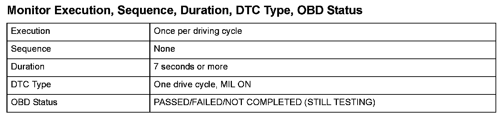

Advanced Diagnostics
DTC P2646: Rocker Arm Oil Pressure Switch Circuit Low VoltageGeneral Description
The VTEC system activates the rocker arm oil control solenoid by command from the powertrain control module (PCM), and it charges/discharges the hydraulic circuit of the VTEC mechanism that switches valve timing between Low and High. The PCM monitors oil pressure in the hydraulic circuit of the VTEC mechanism using the rocker arm oil pressure switch downstream of the rocker arm oil control solenoid. If there is a difference between the oil pressure condition in the hydraulic circuit that is determined by the PCM command and the oil pressure condition that is determined by the status of the rocker arm oil pressure switch, the system is considered faulty, and a DTC is stored.

Monitor Execution, Sequence, Duration, DTC Type, OBD Status
Enable Conditions
Malfunction Threshold
When the rocker arm oil control solenoid is ON, the rocker arm oil pressure switch remains ON.
Confirmation Procedure with the HDS
Do the VTEC TEST in the INSPECTION MENU with the HDS.
Driving Pattern
1. Start the engine. Hold the engine speed at 3,000 rpm without load (in Park or neutral) until the radiator fan comes on.
2. Drive the vehicle in a lower gear at 4,300 rpm or more for at least 7 seconds.
- Drive the vehicle in this manner only if the traffic regulations and ambient conditions allow.
Diagnosis Details
Conditions for illuminating the MIL
When a malfunction is detected, the MIL comes on and the DTC and the freeze frame data are stored in the PCM memory.
Conditions for clearing the MIL
The MIL will be cleared if the malfunction does not recur during three consecutive trips in which the diagnostic runs.
The MIL, the DTC, and the freeze frame data can be cleared by using the scan tool Clear command or by disconnecting the battery.